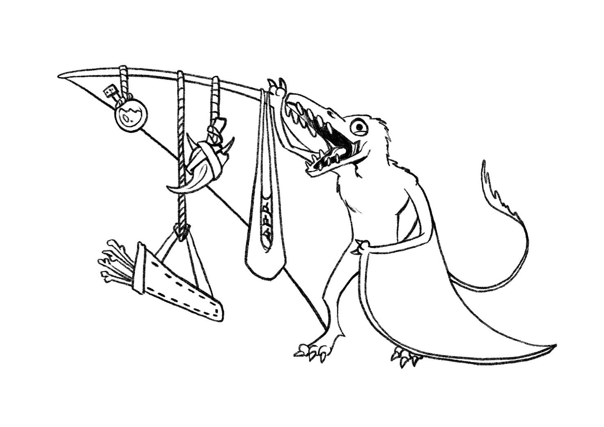

Che si parli di titoli tripla A o di piccole perle indie sconosciute al mondo, ogni videogioco ha un suo stile, qualcosa che sia in grado di accendere una scintilla negli occhi del giocatore: anche noi, tramite questo breve articolo, speriamo di far ardere un fuocherello nei vostri cuori verso quello che è il nostro percorso durante lo sviluppo di Prochronos.
La prima figura che i nostri 6 talentuosi ragazzi del team artistico hanno creato è ovviamente quella del protagonista: un Tyrannosaurus rex, uno dei predatori all’apice della catena alimentare, che si troverà faccia a faccia con i pericoli e i misteri della foresta insidiosa che lo circonda.

Grazie a questo simpatico “animaletto” farete la conoscenza di alleati, fauna selvaggia e anche creature che purtroppo non hanno tutta questa voglia di stringere amicizie… aspetta, ma i tirannosauri non avevano le braccia cortissime? Cosa diamine gli è successo? Non siamo ancora pronti per rispondere a questa domanda, tuttavia, parlando di amicizie, introduciamo un compagno che seguirà il nostro caro T-Rex nella sua avventura: un Sordes pilosus!

Sebbene il suo nome derivi da parole non proprio di buon auspicio come “sporcizia” o “feccia”, vi garantiamo che le merci offerte da questo timido dinosauro sono le migliori in circolazione.
Dopo aver conosciuto questi due fantastici personaggi vi starete sicuramente chiedendo con che cosa dovrà avere a che fare il nostro protagonista, aggiungiamo quindi un po’ di colore ai nostri disegni e immergiamoci in questa natura selvaggia formata da foglie rosse, funghi maleodoranti e… tronchi blu? Caspita, tutto in questo mondo sembra avere qualcosa che non va.

Ci saranno ostacoli da superare, missioni da compiere e nemici da sconfiggere, ma sappiamo che per il piccolo tirannosauro nessuna sfida è troppo ardua! Chissà, magari riuscirà anche a scoprire cosa si cela dietro a questo casino.
Per adesso il viaggio alla scoperta di questo strano universo si conclude, ma non vediamo l’ora di condividere ulteriori novità! Vi lasciamo con un avviso di vitale importanza, una lezione di vita che un vecchio uomo saggio disse, e che ci salvò la pelle in diverse circostanze:
“Mai, e dico MAI entrare in una grotta da soli. Piuttosto compra un sasso da un venditore ambulante dietro l’angolo, ma assicurati di tenertelo molto stretto.”